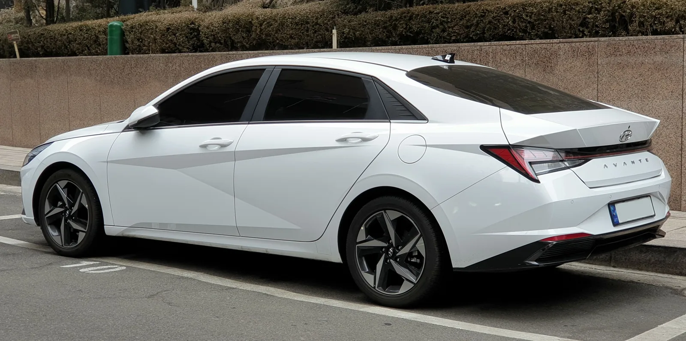
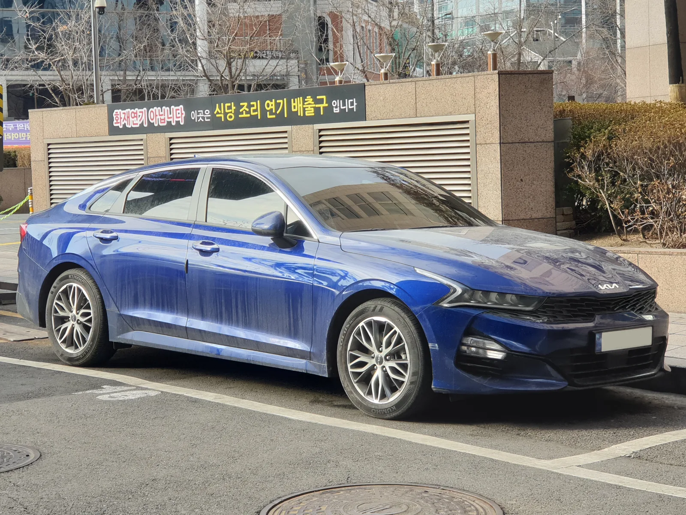
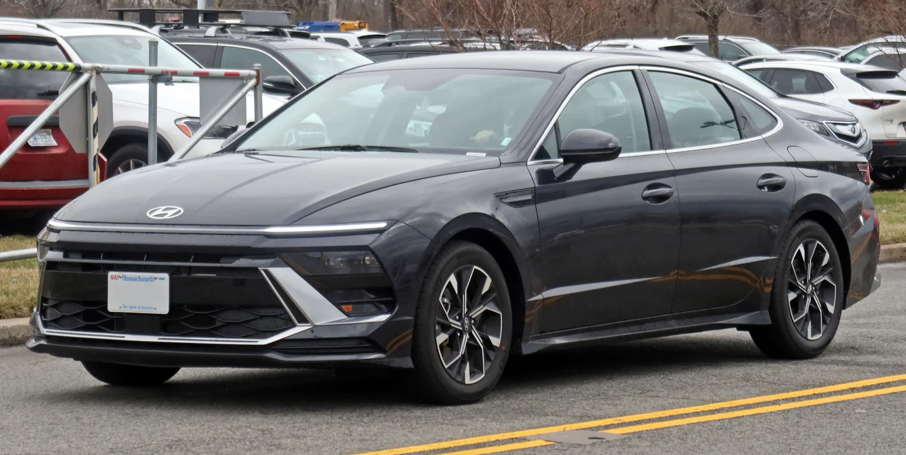
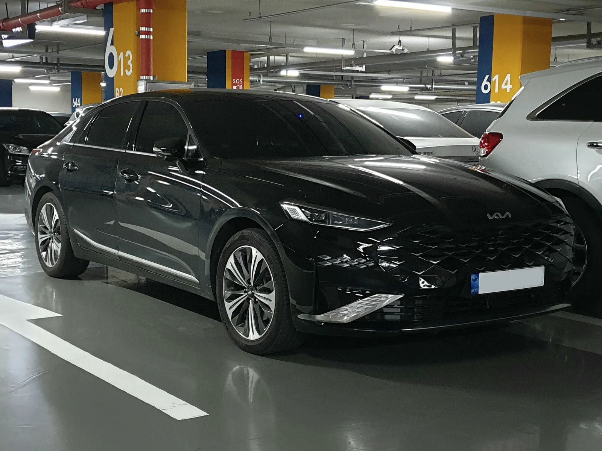
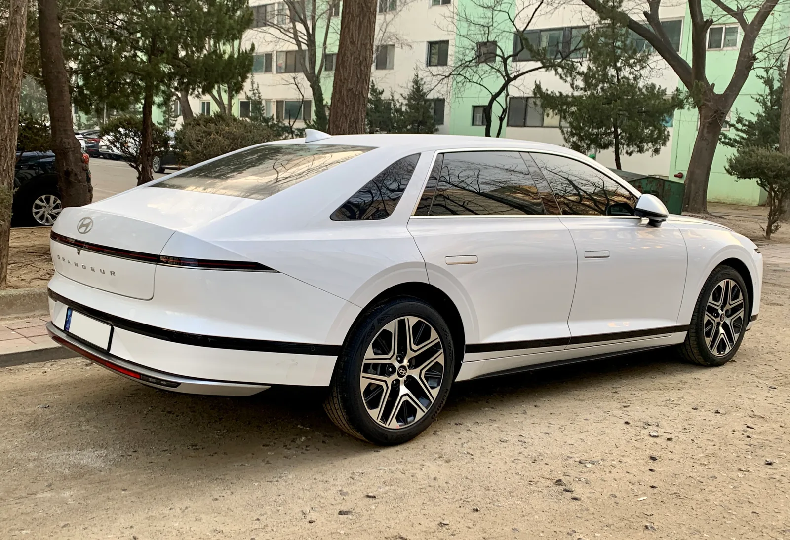

▲ 같은 조건이라도 차종에 따라 보험료 그래프는 다른 모양을 그린다 ⓒ CarPrism (AI 생성 이미지)
"같은 배기량, 비슷한 가격대인데 왜 이 차만 보험료가 더 나올까?" 준중형부터 준대형까지, 국산 세단을 갈아탄 운전자라면 한 번쯤 가져봤을 의문이다.
결론부터 말하면, 차량 가격이나 배기량만으로는 자동차보험료 차이를 설명할 수 없다. 보험료를 가르는 핵심 변수는 보험개발원이 매년 산정하는 차량모델등급, 그리고 차종별로 누적된 사고율·수리비·부품가격 통계다. 이 기사에서는 아반떼(CN7)·K5(DL3)·쏘나타(DN8)·K8(GL3)·그랜저(GN7) 5개 차종을 놓고, 같은 조건이라면 보험료가 왜 달라지는지 공적 시스템과 산업 통계를 기준으로 심층 비교했다.
1. 왜 같은 조건에서도 보험료가 다를까 — 차값이 아니라 '등급'
자동차보험료는 크게 대인배상·대물배상·자기신체손해(또는 자동차상해)·자기차량손해(자차) 등으로 구성된다. 이 중 차종별로 가장 큰 차이가 나는 항목이 자기차량손해(자차) 보험료다. 대인·대물 배상은 운전자의 나이·경력·사고 경력·지역 등 개인 조건의 영향이 크지만, 자차보험료는 차량 자체의 특성이 직접적으로 반영되기 때문이다.
📍 차값이 비싸다고 자차보험료가 비례해서 비싸지는 건 아니다
흔히 "비싼 차 = 비싼 보험료"로 생각하지만, 실제로는 차량가액이 자차보험료 산정의 한 요소일 뿐, 등급 자체는 별도로 매겨진다. 즉 가격이 비슷한 두 차종이라도 사고 시 손상 정도, 수리 편의성, 부품 단가, 실제 손해율 통계가 다르면 등급도, 보험료도 달라질 수 있다.

▲ 아반떼는 준중형 세단 중에서도 가장 많이 팔리는 스테디셀러지만, 보험료는 체급만으로 예단할 수 없다 ⓒ Wikimedia Commons
2. 차량모델등급이란 무엇인가 — 1~26등급의 구조
차량모델등급은 보험개발원(KIDI)이 매년 산정해 발표하는 자기차량손해 보험료 산정 기준이다. 등급은 1등급(보험료 가장 비쌈)부터 26등급(보험료 가장 저렴함)까지 나뉘며, 손해보험사들은 이 등급을 자차보험료 산출의 기초 자료로 활용한다.
| 요인 | 내용 |
|---|---|
| 손상성·수리성 | 저속 충돌 시험 결과 — 충격 흡수 구조, 범퍼·펜더 등 손상 범위, 수리 난이도 |
| 부품가격 | 범퍼·헤드램프·펜더 등 주요 파손 부위 부품의 평균 단가 |
| 손해율 | 동일 모델의 최근 사고 통계상 지급보험금 대비 보험료 비율 |
| 도난율 | 모델별 도난 신고·피해 통계(차량 도난 시 자차보험 지급 대상) |
✅ 알아두면 좋은 사실
· 등급은 매년 1회(보통 4월경) 조정되며, 신차 출시나 부분변경(페이스리프트) 이후 재산정되는 경우가 많음
· 과거 조정 사례를 보면 한 등급 변동에 따라 자차보험료가 대략 5% 안팎으로 오르내린 사례가 보도된 바 있음(2018년 보험개발원 조정 당시 보도 기준)
· 같은 차종이라도 연식·트림(가솔린/하이브리드 등)에 따라 등급이 다르게 매겨질 수 있음
· 등급이 높다고 무조건 '좋은 차'라는 뜻은 아니다 — 안전성이 아니라 '사고 후 수리·손해 비용'을 기준으로 매기는 지표이기 때문
본인 차량의 정확한 등급은 보험개발원 공식 조회 시스템에서 차종·연식·트림을 직접 입력해 확인할 수 있다. 보험개발원 차량등급조회 바로가기
3. 아반떼·K5·쏘나타·K8·그랜저, 실제 등급은 몇 등급일까 — 확인된 것과 확인되지 않은 것
이번 조사에서는 5개 차종의 2026년 기준 정확한 차량모델등급 숫자를 공식 발표 원문에서 직접 확인하지 못했다. 차량모델등급은 보험개발원이 트림·연식별로 세분화해 비정기적으로 갱신하는 데이터이며, 공개된 뉴스 보도나 2차 자료만으로는 특정 시점의 정확한 숫자를 보증하기 어렵기 때문이다. 임의로 등급 수치를 단정해 제시하지 않는다.
| 차종 | 체급 | 현재 세대(코드명) | 2026년 최신 차량모델등급 |
|---|---|---|---|
| 아반떼 | 준중형 | CN7(페이스리프트) | 확인되지 않음 — 보험개발원 직접 조회 필요 |
| K5 | 중형 | DL3 | 확인되지 않음 — 보험개발원 직접 조회 필요 |
| 쏘나타 | 중형 | DN8(더 뉴 쏘나타) | 확인되지 않음 — 보험개발원 직접 조회 필요 |
| K8 | 준대형 | GL3 | 확인되지 않음 — 보험개발원 직접 조회 필요 |
| 그랜저 | 준대형 | GN7(더 뉴 그랜저) | 확인되지 않음 — 보험개발원 직접 조회 필요 |
📍 과거 조정 사례로 보는 등급 변동의 '패턴'
2018년 보험개발원 등급 조정 당시 보도에 따르면, 아반떼(AD)는 전년도 16등급에서 15등급으로 한 단계 낮아지며 자차보험료가 30만1422원에서 31만6493원으로 올랐다고 보도된 바 있다. 같은 조정에서 K3, 쏘나타(신형)는 오히려 등급이 오르며 보험료가 내려간 사례도 있었다. 이는 같은 준중형·중형 체급이라도 세대(신차 출시 시점)에 따라 등급이 달라질 수 있다는 것을 보여주는 과거 사례이며, 2026년 현재 5개 차종의 등급을 그대로 대입할 수 있는 수치는 아니다.

▲ K5는 쏘나타와 플랫폼을 공유하는 형제차이지만, 등급 산정 시점과 세부 트림에 따라 보험료가 달라질 수 있다 ⓒ Wikimedia Commons
4. 준중형·중형·준대형, 보험료 격차의 '경향'은 왜 생기나
정확한 등급 수치는 확인되지 않았지만, 업계에 널리 알려진 보험료 산정 경향은 참고할 수 있다. 다만 이는 절대적 수치가 아니라 일반적으로 설명되는 경향성임을 전제로 한다.
✅ 준중형(아반떼급)이 의외로 저렴하지 않은 이유
· 운전자 연령대가 상대적으로 젊고 초보운전자 비중이 높은 편으로 알려져 있어, 사고율 자체가 높게 집계되는 경향
· 첫 차·법인 영업용 등으로 운행 빈도가 높은 경우가 많아 주행거리·사고 노출 빈도가 늘어나는 효과
· 차값과 부품값은 저렴한 편이지만, 사고율(손해율)이 등급 산정에 함께 반영돼 상쇄되는 구조
✅ 준대형(그랜저·K8급)의 자차보험료가 비싸지는 이유
· 부품가격·수리비 자체가 준중형보다 높음 — 차체가 크고 편의·안전 장비가 많아 파손 시 교체 비용이 큰 편
· 다만 중년층 이상, 무사고 경력이 긴 운전자 비중이 높다고 알려져 있어 손해율 측면에서는 유리하게 작용하는 부분도 있음
· 결과적으로 "부품값은 비싸지만 사고는 상대적으로 적게 낸다"는 양방향 요인이 상충하며 등급이 결정됨

▲ 쏘나타는 준중형과 준대형 사이, 중형 체급에서 등급 산정 요인이 어떻게 절충되는지를 보여주는 사례다 ⓒ Wikimedia Commons
자동차보험 종합포털에서는 차종과 무관하게 적용되는 할인·할증 요인(블랙박스, 안전운전습관 등)도 함께 확인할 수 있다. 자동차보험 종합포털 바로가기
5. 보험다모아로 직접 비교해보는 법
보험다모아는 손해보험협회·생명보험협회가 운영하고 금융위원회가 감독하는 보험상품 비교공시 시스템이다. 자동차보험 메뉴에서 표준화된 가입조건(연령·경력·지역·담보구성 등)을 입력하면, 온라인 다이렉트 채널로 가입 가능한 여러 손해보험사의 예상 보험료를 한 화면에서 비교할 수 있다.
✅ 보험다모아로 세단 5종을 직접 비교하는 절차
· 1단계 — 보험다모아(또는 손해보험협회 자동차보험료 비교조회 페이지) 접속
· 2단계 — 본인 인증 후 연령·운전경력·지역·차량 정보 입력(같은 조건으로 차종만 바꿔가며 반복 조회하면 비교 가능)
· 3단계 — 담보구성(대인배상Ⅰ/Ⅱ, 대물배상, 자기신체손해 또는 자동차상해, 자기차량손해 등)을 동일하게 맞춤
· 4단계 — 차종을 아반떼→K5→쏘나타→K8→그랜저 순으로 바꿔가며 자차보험료 항목의 변화를 기록
· 5단계 — 표시된 금액은 표준화 조건 기준 참고치이며, 실제 개인별 최종 보험료는 각 보험사 홈페이지에서 직접 확인해야 정확함
📍 왜 이 기사에는 구체적인 '원 단위' 보험료가 없나
보험다모아·각 손해보험사가 제공하는 견적은 조회 시점·입력 조건(연식, 등급 특약, 각 보험사의 자체 할인 정책 등)에 따라 실시간으로 달라진다. 특정 시점에 조회한 임의의 숫자를 이 기사에 고정해 싣는 것은, 독자가 실제로 가입 시점에 확인하는 금액과 다를 수밖에 없어 오히려 혼란을 줄 수 있다. 그래서 이 기사는 "얼마"가 아니라 "왜, 어떤 구조로 차이가 나는지"에 초점을 맞췄다. 정확한 견적은 보험다모아에서 본인 조건으로 직접 조회하는 것이 유일하게 신뢰할 수 있는 방법이다.
실제 표준조건 기준 보험료 비교는 아래 손해보험협회 비교조회 페이지에서 확인할 수 있다. 자동차보험료 비교조회 바로가기

▲ K8은 그랜저와 플랫폼을 공유하지만, 트림 구성과 등급 산정 시점에 따라 자차보험료가 다르게 매겨질 수 있다 ⓒ Wikimedia Commons
6. 등급 외에 보험료를 좌우하는 요인들
차량모델등급은 자차보험료의 기준일 뿐, 전체 보험료를 결정하는 유일한 요소는 아니다. 동일 차종이라도 아래 조건에 따라 보험료가 크게 달라질 수 있다.
| 요인 | 영향 |
|---|---|
| 연령·운전경력 | 만 나이 구간별 할인·할증, 최초 가입 후 경력 연수에 따른 할인 누적 |
| 지역 | 일부 보험사는 지역별 손해율 차이를 반영한 할인·할증 적용 |
| 블랙박스·안전장치 특약 | 블랙박스 장착, 첨단운전자보조시스템(ADAS) 탑재 시 할인 특약 적용 가능 |
| 가입 경력·무사고 기간 | 보험 가입 경력 요율, 무사고 할인율 누적(할인·할증등급) |
| 담보 구성·자기부담금 | 자기차량손해 자기부담금 비율을 높이면 보험료는 낮아짐 |
📍 "이 차가 더 싸다"는 후기, 그대로 믿기 어려운 이유
온라인 커뮤니티의 "내 차 보험료 얼마" 후기는 글쓴이 개인의 나이·경력·지역·할인등급·가입 시점이 모두 다르기 때문에 차종 간 순수 비교 자료로 쓰기 어렵다. 같은 차종이라도 사람마다 수십만 원씩 차이가 나는 경우가 흔하다. 차종 간 순수한 격차를 보려면 보험다모아처럼 조건을 고정한 비교 시스템을 이용해야 의미가 있다.

▲ 그랜저는 준대형 세단의 대표주자지만, 보험료만 놓고 보면 부품값과 운전자 특성이라는 상반된 요인이 함께 작용한다 ⓒ Wikimedia Commons
7. 요약
아반떼·K5·쏘나타·K8·그랜저의 자동차보험료 차이는 차값이 아니라 '차량모델등급'이라는 별도 지표에서 비롯된다. 이 등급은 보험개발원이 저속 충돌 손상성·수리성, 부품가격, 손해율, 도난율 등을 종합해 매년 산정하며, 등급이 높을수록(26등급에 가까울수록) 자기차량손해 보험료가 낮아진다.
준중형은 부품값이 싸지만 운전자군의 사고율이 상대적으로 높게 집계되는 경향이 있고, 준대형은 부품값·수리비가 비싸지만 운전자군이 상대적으로 안정적이라는 경향이 있어 체급과 보험료가 반드시 비례하지 않는다. 다만 이는 업계에서 통상적으로 설명되는 경향일 뿐, 이번 조사에서 5개 차종의 2026년 최신 정확한 등급 수치는 공식 원문으로 확인하지 못했다.
실제 내 조건에서 어느 차가 더 저렴한지 알고 싶다면, 근거 없는 후기나 추정치가 아니라 보험다모아·손해보험협회 비교조회 시스템에서 동일 조건으로 직접 조회하는 것이 가장 정확하다. 차량모델등급 자체도 보험개발원 홈페이지에서 무료로 확인할 수 있다.